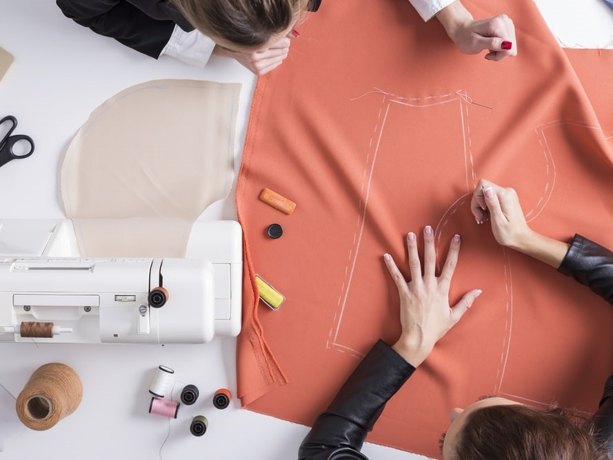
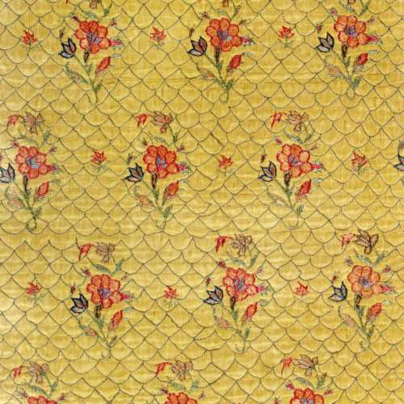
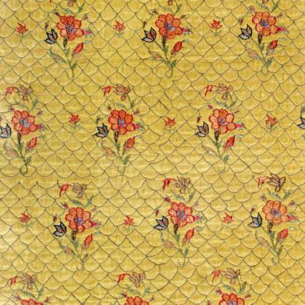

Design textile - accueil
Relocalisation l'industrie textile !


Acteurs locaux
Le events des actualités dans le secteur du design textile français offre un aperçu fascinant des dernières tendances, créations et innovations dans le monde de la mode et du textile. Vous découvrirez les nouvelles collections des créateurs de renom, les techniques de fabrication innovantes, les collaborations passionnantes, et l'évolution des styles et des influences culturelles. Restez informé sur ce secteur en constante évolution grâce à notre events d'actualités dédié au design textile français.
Ennoblissement

Conception
Confection
Le lin, une fibre naturelle et locale et peu gourmande.
Photos
Petite sélection des visuels qui ont retiennent mon attention pour mes futures projets.
 
